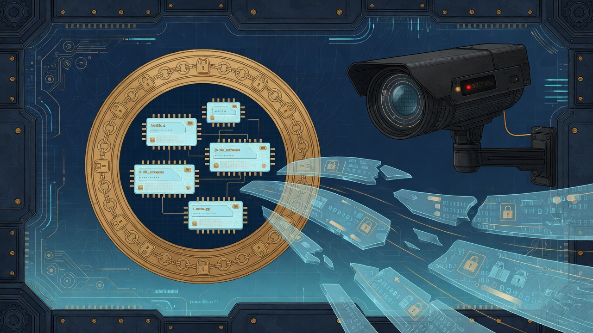
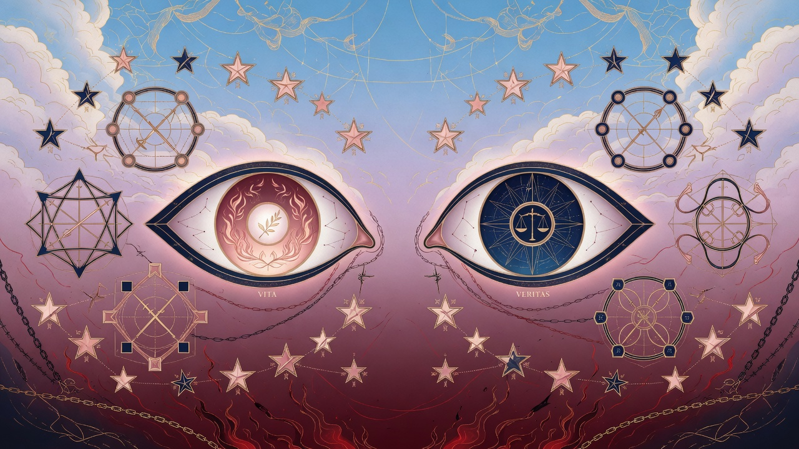
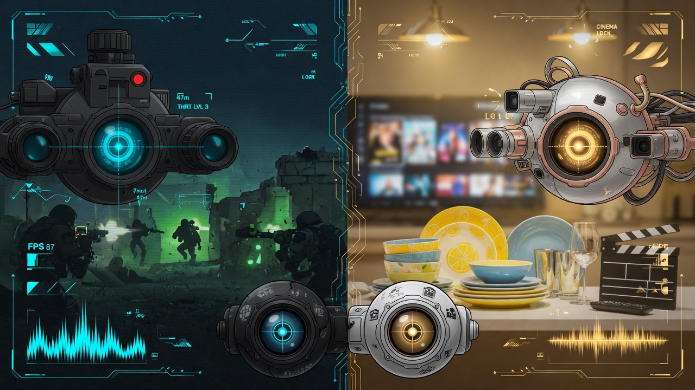

The textbook
Eight chapters — picture-led, operator-honest
Each chapter is ~1,000–1,200 words with a generated figure. Labels: Implemented Measured Doctrine

Preface — The Final Eyeball
Operator map, honesty covenant, thesis, and where Final_Eye sits in the Field stack.
ZOCRSM1 Vision Ingress
Capture, preserve, pattern, offense — the silent vision pipeline from lens to ledger.

GRKMF1 & GVC1 — Not MPEG
Proprietary envelope, tamper rejection, bullet_train benchmarks, AI-tunable cinema.

Security & Silent Capture
Code seal, stream AES-GCM, operator tokens, and why silence is integrity.

War & Dishes — Robotics Modes
Combat 3–20 fps versus cinema 240 doctrine — arm API, tune paths, assist contract.

Grok16 Field Compiler
g16 gnu17, g++26 kernel, field_opt profiles, Queen forge probe.

Entity Eyeballs & Weapons
Vita, Veritas, twins, 37 weapons, heaven_pass and hell_rip truth parameters.

Field Ops & Sovereign Stack
ZAC pack/restore, Queen/Hostess co-deploy, Co-Pilot, release matrix, grep labs.
Cross-read
Sibling surfaces in the Field stack
Final_Eye is the vision layer beside Field Primer Ch 11, NEXUS panel at :9477, and Queen browser gates in Ch 21. One sovereign stack — gates held, vision sealed, receipts grep-able.